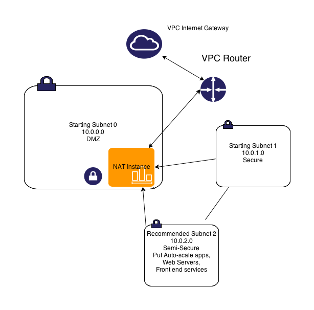
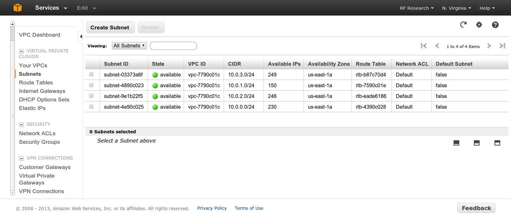
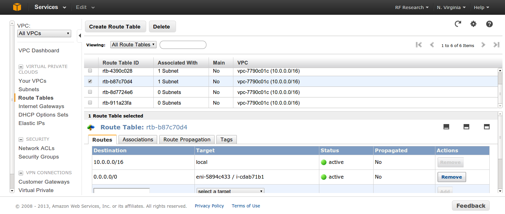

Deploying, Scaling, and Running Grails on AWS and VPC
Standard practices to make your Grails app purr!!
Created by Ryan Vanderwerf / @RyanVanderwerf
What We Will Cover
- VPC
- S3
- ElasticWolf
- Grails Plugins
- Elastic Load Balancers
- Autoscaling
- Others misc tips
VPC - Virtual Private Cloud
- Routing
- NAT
- ACL Firewall
- Suggested Subnets
- Security Groups
- DHCP Tips
- Others misc tips
VPC Overview
- Now required on new AWS accounts
- Very different that EC2 'Classic' which has no private network layer
- Costs nothing extra - you have nothing to lose
VPC - Routing/Subnets

VPC - Routing/Subnets
VPC - Routing/Subnets
adding a 3rd subnet - this gives a helping hand
- auto-scaling instances can access internet through NAT
- Web Servers, Web facing apps can live behind ELB yet be able to run OS updates
- S3 Buckets accessible
- can access your secure subnet as well
VPC - Routing/Subnets

VPC - Routing/Subnets
VPC - Routing/Subnets

VPC - Routing/Subnets
VPC - Routing/Subnets
Security ACLs
- ACLs like a full firewall - unlike groups
- Protect subnets instead of EC2 instances
- Processed in order of rule #
- ACLs are stateless - responses to inbound bound by outbound rules
- To accommodate various clients and OSs open ephemeral ports 1024-65535 then block malicous ports
VPC - Routing/Subnets
Security Groups
- VPC Security Groups are different than EC2 Groups - use different and descriptive names if both used
- You can use a security group ID (starting with sgXXXXX) in blace
- Pro cessed in order of rule #
- ACLs are stateless - responses to inbound bound by outbound rules
- To accommodate various clients and OSs open ephemeral ports 1024-65535 then block malicous ports
VPC - Routing/Subnets
DHCP Options
- Determine What DNS DHCP clients use
- Can things like default domain, whether to use internal or external DNS for your VPC
- From Web UI, assign only 1 option set at a time
- Using amazon provided DNS, using naming scheme of 10.0.1.x, default domain ec2.internal
- Can assign your own DNS server names, or even Netbios name servers or NTP servers
- Options are semicolor delimited name value pairs, i.e. 'domain-name=something.com; domain-name-severs=AmazonProvidedDNSs
VPC - IAM Roles
- Don't use root account anymore. Traditional secutiry page will be retired
- Set up your IAM roles for each user
- Use new resource level security with IAM to tier access to instances/resources
VPC - Misc EC2 Tips
- Reboot != Reboot
- Rebooting a machine from console will keep instance in place and ephemeral storage
- If you issue an OS reboot or a 'stop' command you machine will move and lose ephemeral state
VPC - Misc EC2 Tips
- VPN
- Use OpenVPN instead of metered AWS VPN - it runs fine on a tiny instance
- Use OpenVPN client to leave remote servers connected to VPC - it auto-reconnects
VPC - Misc EC2 Tips
- Load Balancer
- 60s timeout on idle max - can file ticket for extension to 15+ minutes
- Use Haproxy for anything very advanced, can accommodate many options
VPC - Misc EC2 Tips
- EBS Based Instances
- Use EBS backed instances for anything not build for cloud
- If you can build server on the fly with Chef/Puppet like tools, go for ephemeral based
- EBS backed instances have no swap by default - be sure to specify ephemeral disks on launch, use as swap
- EBS backed instances have no ephemeral disks on by default be sure to use them on launch of instance and AMIs
S3 Storage
- Limitations
- Common tools
- Regions with different functionality
- Glacier
- Grails S3 Plugin
S3 Storage
- This means after write/update it will EVENTUALLY be consistent
- Make your app retry on read fail - it might not be synced yet
- Different regions have different consistency rules
- US-West and EU Buckets have read after write consistency - but not update or delete (and cost more)
- US-East is so large it cannot handle any kind of consistency after write/update/delete - except patience!
Limitations - Eventual Consistency
S3 Storage
- Files over 5GB supported, but most tools don't handle properly
- S3 Tools must support mime/multipart
- s3cmd(Linux) / CyberDuck 4(Mac/Win32) / S3 Browser(Win32) / Cloudberry Explorer(PRO Win32) / Bucket Explorer
- File > 5GB files work with these tools, it is EXTREMELY slow
Limitations - large files
S3 Storage
- s3fs - mount as filesystem - but >5GB files broken, beware of consistency!
- Make sure FUSE is in kernel
- s3cmd is best free command line tools
- Bucket Explorer & CloudBerry Backup are good solid windows clients that parallelize multi-part uploads to ease the pain
- s3 Browser is ok free tool
Tools
S3 Storage
- US-East-1 Cheapest for full redundancy otherwise to save $ you can use RRS (Or Glacier)
- US-West and EU Buckets have read after write consistency - but not update or delete (and cost more)
- US-East is so large it cannot handle any kind of consistency after write/update/delete - except patience!
- Barring these limitations (and budget!), use the region closed to your VPC instances and regions
Different Function Between Different Regions
S3 Storage
Grails S3 Plugin
- Looks unmaintained, but still works fine on latest Grails versions (no JIRA bugs pending!)
- Delete Buckets (See org.grails.s3.BucketService)
- Uploads and catalogs assets (will use bucket name you give as base for its bucket name)
- Names files inside bucket with UUIDs to avoid collisions
- Can give each asset a bucket and key pair or global
General AWS Grails Plugins
- Grails AWS Plugin
- AWS SDK Plugin
- DynamoDB GORM Plugin
- Amazon Flexible Payments
- SimpleDB GORM Plugin
General AWS Grails Plugins - Grails AWS Plugin
Has handy Gant scripts installed
- AwsSesGetSendQuota
- AwsSwsGetSendStatistics
- AwsSesListVerifiedEmails
- AwsSesSendPingMail
- AwsSesVerifyEmail
General AWS Grails Plugins - Grails AWS Plugin
AwsSesGetSendQuota
- Gets your current Quota for Simple Email Service
- Shows email limit per day, per second, # of emails
General AWS Grails Plugins - Grails AWS Plugin
AwsSwsGetSendStatistics
- Gets your current Quota for Simple Email Service
- Shows email limit per day, per second, # of emails
ElasticWolf
- More powerful than web console gui
- Can control things like auto-scaling
Works in Mobile Safari
Try it out! You can swipe through the slides and pinch your way to the overview.
Marvelous Unordered List
- No order here
- Or here
- Or here
- Or here
Fantastic Ordered List
- One is smaller than...
- Two is smaller than...
- Three!
Transition Styles
You can select from different transitions, like:
Cube -
Page -
Concave -
Zoom -
Linear -
Fade -
None -
Default
Themes
Reveal.js comes with a few themes built in:
Sky -
Beige -
Simple -
Serif -
Night -
Default
* Theme demos are loaded after the presentation which leads to flicker. In production you should load your theme in the <head> using a <link>.
Global State
Set data-state="something" on a slide and "something"
will be added as a class to the document element when the slide is open. This lets you
apply broader style changes, like switching the background.
"blackout"
"soothe"
Custom Events
Additionally custom events can be triggered on a per slide basis by binding to the data-state name.
Reveal.addEventListener( 'customevent', function() {
console.log( '"customevent" has fired' );
} );
Clever Quotes
These guys come in two forms, inline:
“The nice thing about standards is that there are so many to choose from”
and block:
“For years there has been a theory that millions of monkeys typing at random on millions of typewriters would reproduce the entire works of Shakespeare. The Internet has proven this theory to be untrue.”
Pretty Code
function linkify( selector ) {
if( supports3DTransforms ) {
var nodes = document.querySelectorAll( selector );
for( var i = 0, len = nodes.length; i < len; i++ ) {
var node = nodes[i];
if( !node.className ) ) {
node.className += ' roll';
}
};
}
}
Courtesy of highlight.js.
Intergalactic Interconnections
You can link between slides internally, like this.
Fragmented Views
Hit the next arrow...
... to step through ...
any type- of view
- fragments
Fragment Styles
There's a few styles of fragments, like:
grow
shrink
roll-in
fade-out
highlight-red
highlight-green
highlight-blue
Spectacular image!

Export to PDF
Presentations can be exported to PDF, below is an example that's been uploaded to SlideShare.
Take a Moment
Press b or period on your keyboard to enter the 'paused' mode. This mode is helpful when you want to take distracting slides off the screen during a presentation.